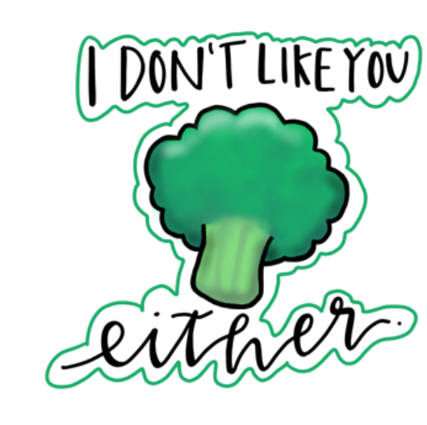

Overview
Purpose
Our purpose here at Peachy Penguin is to provide you with the stickers you need to express the way you really feel! Spice up your life with our one-of-a-kind water bottle or laptop stickers!
Audience
Our intended audience is people between elementary and college aged students who wish to celebrate their uniqueness with stickers that represent them and their personalties! We also cater to small businesses that need help designing logos and promotional items.
Branding
Website Logo

Style Guide
Color Palette
#F9DBBD, #A4778B, #0B3954, #F56416 Palette URL: https://coolors.co/f9dbbd-0b3954-a4778b-f56416-475b63| Primary | Secondary | Accent 1 | Accent 2 |
|---|---|---|---|
| #0B3954 | #A4778B | #F9DBBD | #F56416 |
Typography
Heading Font: Caveat
Paragraph Font: Abel
Normal paragraph example
Here at Peachy Penguin, we offer a variety of products we are confident you will love! From inspirational quotes, to memes, to doodles of your favorite characters, we have it all. Plus, we love to customize stickers to your liking! Satisfaction is always guarenteed!
Colored paragraph example
We also cater to a more professional audience. Starting up a new business but don't know where to start? Look no further! For an affordable price, we can chat with you to design your dream logo until it matches your style! We also love to create stickers you can use for promotional purposes. Anything media based, we've got it under control!
Navigation
Site Map
Content
Home page
Welcome to Peachy Penguin! We are a family owned business dedicated to make your stickers dreams come true! We offer a variety of stickers guarenteed to satisfy the needs all ages and personalities, or businesses! From motivational quotes to help you get through your day, to quirky jokes to add a smile to your face, we have it all. That empty spot on your hydroflask or laptop is begging for you to dive deep into our one of a kind and hand made stickers! We also offer services to design logos or shipping labels for business! We love to work with our clients until they are satisfied with the results!
Images for the Home page

Fun Stickers
These stickers are designed for the light-hearted adventure seekers that want to add some variety into their life. These hand-made and of a kind designs are sure to brighten anyones day! Who doesn't love a good one-liner dad joke? With these quirky and unique designs, you can carry that fun with you anywhere you go! These stickers are unique, and unique to you! Show off who you really are!
Images for the Fun Stickers page
Seasonal Stickers
These stickers are for the people that put up their Christmas tree before Thanksgiving, or go above and beyond with their Halloween costume. This is an added way to celebrate life and get excited about the time of year! Prepare to get spooky, merry, and thankful all at the same time with these seasonal stickers! These are best used as holiday gifts, stocking stuffers!
Images for the Seasonal Stickers page

Wireframes
Create three wireframes for your site. One for each page and list them here
Home
[Any additional details about home that the wireframe does not make clear]
[Page 2]
[Any additional details about page 2 that the wireframe does not make clear]
[Page 3]
[Any additional details about page 3 that the wireframe does not make clear]